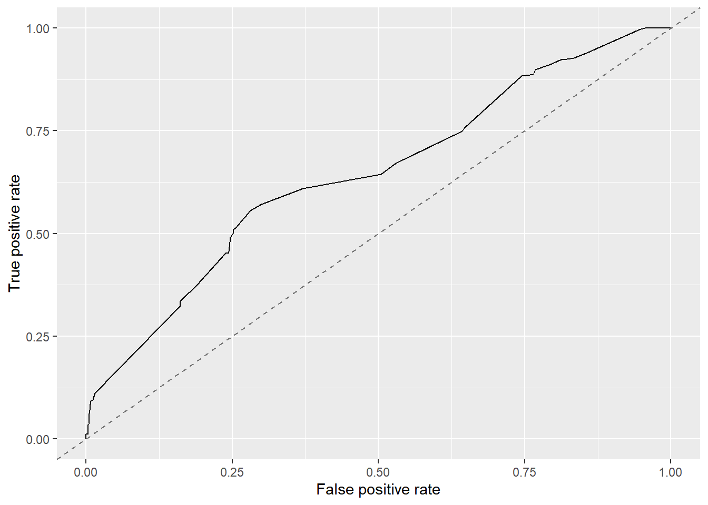

Overview
This document will guide you through some data analysis tasks with a focus on performing variable selection. For this exercise, we consider a categorical outcome.
While this is in some sense a stand-alone analysis, I assume that you have worked through the Data Analysis exercise and are familiar with the dataset and all the things we discovered during the cleaning process. We’ll use the same dataset here but focus on a different outcome. Other than that, the way to work through the exercise is like in the Data Analysis exercise, namely by writing/completing the missing code.
Project setup
We need a variety of different packages, which are loaded here. Install as needed. If you use others, load them here.
library('tidyr')
library('dplyr')
library('forcats')
library('ggplot2')
library('knitr')
library('mlr') #for model fitting.## Loading required package: ParamHelpers##
## Attaching package: 'mlr'## The following object is masked _by_ '.GlobalEnv':
##
## auc## The following object is masked from 'package:caret':
##
## trainlibrary('parallelMap') #for using multiple processors when running models through mlr
library('visdat')
library('gridExtra')
library('gtools')
library('pROC')## Type 'citation("pROC")' for a citation.##
## Attaching package: 'pROC'## The following objects are masked from 'package:stats':
##
## cov, smooth, varData loading and cleaning
We will again use the Norovirus dataset.
#Write code that loads the dataset
#You can of course re-use code you wrote in the other file.
raw_data <- read.csv("norodata.csv", header=TRUE)
head(raw_data)## id Author Pub_Year pubmedid EpiCurve TDComment AHComment Trans1
## 1 2 Akihara 2005 15841336 Y Unspecified
## 2 17 Becker 2000 11071673 Y Foodborne
## 3 39 Boxman 2009 19205471 N Foodborne
## 4 40 Boxman 2009 19205471 N Foodborne
## 5 41 Boxman 2009 19205471 N Foodborne
## 6 42 Boxman 2009 19205471 N Foodborne
## Trans1_O Trans2 Trans2_O Trans3 Trans3_O Risk1
## 1 0 (not applicable) 0 (not applicable) 0 0
## 2 0 Person to Person 0 (not applicable) 0 108
## 3 0 (not applicable) 0 (not applicable) 0 130
## 4 0 (not applicable) 0 (not applicable) 0 4
## 5 0 (not applicable) 0 (not applicable) 0 25
## 6 0 (not applicable) 0 (not applicable) 0 8
## Risk2 RiskAll Cases1 Cases2 CasesAll Rate1 Rate2 RateAll
## 1 NA 0 15 NA 15 NA NA 0.00000
## 2 NA 108 43 22 65 39.81481 NA 39.81481
## 3 NA 130 27 NA 27 20.76923 NA 20.76923
## 4 NA 4 4 NA 4 100.00000 NA 100.00000
## 5 NA 25 15 NA 15 60.00000 NA 60.00000
## 6 NA 8 6 NA 6 75.00000 NA 75.00000
## Hospitalizations Deaths Vehicle_1 Veh1
## 1 0 0 0 Unspecified
## 2 0 0 Boxed Lunch Yes
## 3 0 0 0 Unspecified
## 4 0 0 0 Unspecified
## 5 0 0 0 Unspecified
## 6 0 0 0 Unspecified
## Veh1_D_1 Veh2 Veh2_D_1 Veh3 Veh3_D_1
## 1 0 No 0 No 0
## 2 Turkey Sandwich in boxed lunch Yes Football players No 0
## 3 0 No 0 No 0
## 4 0 No 0 No 0
## 5 0 No 0 No 0
## 6 0 No 0 No 0
## PCRSect OBYear Hemisphere season MeanI1 MedianI1 Range_S_I1
## 1 Capsid 1999 Northern Fall 0 0 0
## 2 Polymerase 1998 Northern Fall 0 37 0
## 3 Both 2006 Northern Fall 0 0 0
## 4 Both 2006 Northern Fall 0 0 0
## 5 Both 2006 Northern Fall 0 0 0
## 6 Both 2006 Northern Fall 0 0 0
## Range_L_I1 MeanD1 MedianD1 Range_S_D1 Range_L_D1 MeanA1 MedianA1
## 1 0 0 0 0 0 NA NA
## 2 0 0 36 0 0 NA NA
## 3 0 0 0 0 0 NA NA
## 4 0 0 0 0 0 NA NA
## 5 0 0 0 0 0 NA NA
## 6 0 0 0 0 0 NA NA
## Range_Y_A1 Range_O_A1 Action1 Action2_1 Secondary MeanI2 MedianI2
## 1 0.75 2 Unspecified 0 No 0 0
## 2 0 0 Unspecified 0 Yes 0 0
## 3 0 0 Unspecified 0 No 0 0
## 4 0 0 Unspecified 0 No 0 0
## 5 0 0 Unspecified 0 No 0 0
## 6 0 0 Unspecified 0 No 0 0
## Range_S_I2 Range_L_I2 MeanD2 MedianD2 Range_S_D2 Range_L_D2 Mea.2
## 1 0 0 0 0 0 0 0
## 2 0 0 0 0 0 0 0
## 3 0 0 0 0 0 0 0
## 4 0 0 0 0 0 0 0
## 5 0 0 0 0 0 0 0
## 6 0 0 0 0 0 0 0
## Media.2 Range_Y_A2 Range_O_A2
## 1 0 0 0
## 2 0 0 0
## 3 0 0 0
## 4 0 0 0
## 5 0 0 0
## 6 0 0 0
## Comments_1
## 1 Outbreak took place during a study on gasteroenteritus in a day care center. Same paper as outbreak # 2
## 2 Secondary cases include both persons from NC and FL, some secondary cases were included in # at risk of primary infection
## 3 VWA outbreak no. 68592 in Table 1
## 4 VWA outbreak no. 69113 in Table 1
## 5 VWA outbreak no. 69479 in Table 1
## 6 VWA outbreak no. 69490 in Table 1
## Path1 Path2_1 Country Category State
## 1 No 0 Japan Daycare 0
## 2 No 0 USA Foodservice NC, FL
## 3 Unspecified 0 Other Foodservice 0
## 4 Unspecified 0 Other Foodservice 0
## 5 Unspecified 0 Other Foodservice 0
## 6 Unspecified 0 Other Foodservice 0
## Setting_1 StartMonth EndMonth GGA CA SA
## 1 Daycare Center 11 12 2 4 Lordsdale
## 2 Boxed lunch, football game 9 9 1 0 Thistle Hall 1/91
## 3 buffet 9 0 2 4 GII.4 2006a
## 4 restaurant 10 0 0 0 0
## 5 buffet 11 0 2 4 GII.4 2006b
## 6 take-out restaurant 11 0 0 0 0
## new_GGA new_CA new_SA SA_resolved_from GGB CB SB new_GGB new_CB new_SB
## 1 0 0 0 0 0 0 0 0 0
## 2 0 0 0 0 0 0 0 0 0
## 3 0 0 0 0 0 0 0 0 0
## 4 0 0 0 0 0 0 0 0 0
## 5 0 0 0 0 0 0 0 0 0
## 6 0 0 0 0 0 0 0 0 0
## SB_resolved_from GGC CC SC new_ggc new_cc new_sc SC_resolved_from GGD CD
## 1 0 0 0 0 0 0 0 0
## 2 0 0 0 0 0 0 0 0
## 3 0 0 0 0 0 0 0 0
## 4 0 0 0 0 0 0 0 0
## 5 0 0 0 0 0 0 0 0
## 6 0 0 0 0 0 0 0 0
## SD new_ggd new_cd new_sd SD_resolved_from StrainOther strainother_rc gge
## 1 0 0 0 0 NA 0 0 0
## 2 0 0 0 0 NA 0 0 0
## 3 0 0 0 0 NA 0 0 0
## 4 0 0 0 0 NA 0 0 0
## 5 0 0 0 0 NA 0 0 0
## 6 0 0 0 0 NA 0 0 0
## ce se SE_resolved_from ggf cf sf ggg cg sg ggh ch sh ggi ci si ggj cj sj
## 1 0 0 0 0 0 0 0 0 0 0 0 0 0 0 0 0 0
## 2 0 0 0 0 0 0 0 0 0 0 0 0 0 0 0 0 0
## 3 0 0 0 0 0 0 0 0 0 0 0 0 0 0 0 0 0
## 4 0 0 0 0 0 0 0 0 0 0 0 0 0 0 0 0 0
## 5 0 0 0 0 0 0 0 0 0 0 0 0 0 0 0 0 0
## 6 0 0 0 0 0 0 0 0 0 0 0 0 0 0 0 0 0
## Country2 Veh1_D_2 Veh2_D_2 Veh3_D_2 Action2_2
## 1 0 0 0 0 0
## 2 0 Boxed Lunch 0 0 0
## 3 The Netherlands 0 0 0 0
## 4 The Netherlands 0 0 0 0
## 5 The Netherlands 0 0 0 0
## 6 The Netherlands 0 0 0 0
## Comments_2 Path2_2 Setting_2 category1
## 1 Limited data 0 0 School/Daycare
## 2 0 0 0 Foodservice
## 3 Outbreak 19 of 26 Boxman 2009 0 Buffet Foodservice
## 4 Outbreak 20 of 26 Boxman 2009 0 Restaurant Foodservice
## 5 Outbreak 21 of 26 Boxman 2009 0 Buffet Foodservice
## 6 Outbreak 22 of 26 Boxman 2009 0 take out restaurant Foodservice
## strainothergg2c4 gg2c4 Vomit IncInd SymInd PooledLat PooledSym PooledAge
## 1 0 Yes 1 0 0 0 0 0
## 2 0 1 0 0 37 36 0
## 3 0 Yes 1 0 0 0 0 0
## 4 0 1 0 0 0 0 0
## 5 0 Yes 1 0 0 0 0 0
## 6 0 1 0 0 0 0 0
## IndividualLatent IndividualSymptomatic
## 1 NA
## 2 NA
## 3 NA
## 4 NA
## 5 NA
## 6 NA## 'data.frame': 1022 obs. of 139 variables:
## $ id : int 2 17 39 40 41 42 43 44 67 74 ...
## $ Author : Factor w/ 217 levels " kagawa-Okamoto",..: 3 9 16 16 16 16 16 16 25 28 ...
## $ Pub_Year : int 2005 2000 2009 2009 2009 2009 2009 2009 2009 1994 ...
## $ pubmedid : int 15841336 11071673 19205471 19205471 19205471 19205471 19205471 19205471 19440360 8202078 ...
## $ EpiCurve : Factor w/ 3 levels "","N","Y": 3 3 2 2 2 2 2 2 2 2 ...
## $ TDComment : Factor w/ 11 levels "","Just norovirus outbreak",..: 1 1 1 1 1 1 1 1 1 1 ...
## $ AHComment : Factor w/ 3 levels "","confirmed",..: 1 1 1 1 1 1 1 1 1 1 ...
## $ Trans1 : Factor w/ 6 levels "Environmental",..: 5 2 2 2 2 2 2 2 5 2 ...
## $ Trans1_O : int 0 0 0 0 0 0 0 0 0 0 ...
## $ Trans2 : Factor w/ 6 levels " (not applicable)",..: 1 5 1 1 1 1 1 1 1 1 ...
## $ Trans2_O : Factor w/ 2 levels "0","Direct contact with diarrhea or vomitus": 1 1 1 1 1 1 1 1 1 1 ...
## $ Trans3 : Factor w/ 6 levels " (not applicable)",..: 1 1 1 1 1 1 1 1 1 1 ...
## $ Trans3_O : Factor w/ 2 levels "0","smoking": 1 1 1 1 1 1 1 1 1 1 ...
## $ Risk1 : num 0 108 130 4 25 ...
## $ Risk2 : num NA NA NA NA NA NA NA NA NA NA ...
## $ RiskAll : num 0 108 130 4 25 ...
## $ Cases1 : int 15 43 27 4 15 6 40 10 116 45 ...
## $ Cases2 : int NA 22 NA NA NA NA NA NA NA NA ...
## $ CasesAll : int 15 65 27 4 15 6 40 10 116 45 ...
## $ Rate1 : num NA 39.8 20.8 100 60 ...
## $ Rate2 : num NA NA NA NA NA NA NA NA NA NA ...
## $ RateAll : num 0 39.8 20.8 100 60 ...
## $ Hospitalizations : int 0 0 0 0 0 0 0 0 5 10 ...
## $ Deaths : int 0 0 0 0 0 0 0 0 0 0 ...
## $ Vehicle_1 : Factor w/ 126 levels "0","Aerosolized vomit",..: 1 6 1 1 1 1 1 1 1 73 ...
## $ Veh1 : Factor w/ 4 levels "No","Unknown",..: 3 4 3 3 3 3 3 3 3 4 ...
## $ Veh1_D_1 : Factor w/ 163 levels "0","aerosilized",..: 1 159 1 1 1 1 1 1 1 107 ...
## $ Veh2 : Factor w/ 2 levels "No","Yes": 1 2 1 1 1 1 1 1 1 1 ...
## $ Veh2_D_1 : Factor w/ 63 levels "","0","accommodation environment on day of arrival",..: 2 21 2 2 2 2 2 2 2 2 ...
## $ Veh3 : Factor w/ 2 levels "No","Yes": 1 1 1 1 1 1 1 1 1 1 ...
## $ Veh3_D_1 : Factor w/ 19 levels "","0","Brandy S ps",..: 2 2 2 2 2 2 2 2 2 2 ...
## $ PCRSect : Factor w/ 4 levels "Both","Capsid",..: 2 3 1 1 1 1 1 1 1 4 ...
## $ OBYear : Factor w/ 23 levels "0","1983","1990",..: 11 10 19 19 19 19 19 19 17 5 ...
## $ Hemisphere : Factor w/ 3 levels "Northern","Southern",..: 1 1 1 1 1 1 1 1 1 1 ...
## $ season : Factor w/ 5 levels "","Fall","Spring",..: 2 2 2 2 2 2 2 2 2 2 ...
## $ MeanI1 : int 0 0 0 0 0 0 0 0 0 0 ...
## $ MedianI1 : int 0 37 0 0 0 0 0 0 0 31 ...
## $ Range_S_I1 : num 0 0 0 0 0 0 0 0 0 2 ...
## $ Range_L_I1 : num 0 0 0 0 0 0 0 0 0 69 ...
## $ MeanD1 : num 0 0 0 0 0 0 0 0 0 0 ...
## $ MedianD1 : num 0 36 0 0 0 0 0 0 0 48 ...
## $ Range_S_D1 : num 0 0 0 0 0 0 0 0 0 10 ...
## $ Range_L_D1 : int 0 0 0 0 0 0 0 0 0 168 ...
## $ MeanA1 : num NA NA NA NA NA NA NA NA NA NA ...
## $ MedianA1 : num NA NA NA NA NA NA NA NA NA NA ...
## $ Range_Y_A1 : Factor w/ 49 levels "<1","0","0.167",..: 8 2 2 2 2 2 2 2 2 2 ...
## $ Range_O_A1 : num 2 0 0 0 0 0 0 0 0 0 ...
## $ Action1 : Factor w/ 4 levels "No","Unknown",..: 3 3 3 3 3 3 3 3 3 4 ...
## $ Action2_1 : Factor w/ 186 levels "","\tContami ted batch withdrawn from market; Finnish authorities issued alert through Rapid Alert System for Food"| __truncated__,..: 5 5 5 5 5 5 5 5 5 108 ...
## $ Secondary : Factor w/ 3 levels "","No","Yes": 2 3 2 2 2 2 2 2 2 2 ...
## $ MeanI2 : int 0 0 0 0 0 0 0 0 0 0 ...
## $ MedianI2 : int 0 0 0 0 0 0 0 0 0 0 ...
## $ Range_S_I2 : int 0 0 0 0 0 0 0 0 0 0 ...
## $ Range_L_I2 : int 0 0 0 0 0 0 0 0 0 0 ...
## $ MeanD2 : int 0 0 0 0 0 0 0 0 0 0 ...
## $ MedianD2 : int 0 0 0 0 0 0 0 0 0 0 ...
## $ Range_S_D2 : int 0 0 0 0 0 0 0 0 0 0 ...
## $ Range_L_D2 : int 0 0 0 0 0 0 0 0 0 0 ...
## $ Mea.2 : int 0 0 0 0 0 0 0 0 0 0 ...
## $ Media.2 : int 0 0 0 0 0 0 0 0 0 0 ...
## $ Range_Y_A2 : int 0 0 0 0 0 0 0 0 0 0 ...
## $ Range_O_A2 : int 0 0 0 0 0 0 0 0 0 0 ...
## $ Comments_1 : Factor w/ 989 levels ""," turally recombi nt GII NV outbreak occurred in infant home in Sapporo, Japan where only residents who were up "| __truncated__,..: 918 938 978 979 980 981 984 982 350 853 ...
## $ Path1 : Factor w/ 4 levels "No","Unknown",..: 1 1 3 3 3 3 3 3 1 3 ...
## $ Path2_1 : Factor w/ 59 levels "","0","adenovirus",..: 2 2 2 2 2 2 2 2 2 2 ...
## $ Country : Factor w/ 22 levels "Australia","Austria",..: 12 22 17 17 17 17 17 17 17 22 ...
## $ Category : Factor w/ 12 levels "Daycare","Foodservice",..: 1 2 2 2 2 2 2 2 6 12 ...
## $ State : Factor w/ 36 levels "0","1","14 states: CA, UT, KS, WI, IL, IN, OH, GA, FL, NC, VA, WV, NY, PA,",..: 1 21 1 1 1 1 1 1 1 9 ...
## $ Setting_1 : Factor w/ 388 levels "\tPsychiatric Care Center adjoined",..: 121 32 39 310 39 352 39 310 201 3 ...
## $ StartMonth : int 11 9 9 10 11 11 11 11 11 11 ...
## $ EndMonth : int 12 9 0 0 0 0 0 0 11 11 ...
## $ GGA : int 2 1 2 0 2 0 0 0 2 0 ...
## $ CA : int 4 0 4 0 4 0 0 0 4 0 ...
## $ SA : Factor w/ 123 levels "0","100% identity w/AB05308, 96% identity w/MOH",..: 62 115 34 1 35 1 1 1 122 1 ...
## $ new_GGA : int 0 0 0 0 0 0 0 0 0 0 ...
## $ new_CA : int 0 0 0 0 0 0 0 0 0 0 ...
## $ new_SA : Factor w/ 27 levels "0","ARG320-USA",..: 1 1 1 1 1 1 1 1 1 1 ...
## $ SA_resolved_from : Factor w/ 9 levels "","abstraction",..: 1 1 1 1 1 1 1 1 1 1 ...
## $ GGB : int 0 0 0 0 0 0 0 0 0 0 ...
## $ CB : Factor w/ 18 levels "0","1","10","12",..: 1 1 1 1 1 1 1 1 1 1 ...
## $ SB : Factor w/ 38 levels "0","93.7% homology w/Saitama",..: 1 1 1 1 1 1 1 1 1 1 ...
## $ new_GGB : int 0 0 0 0 0 0 0 0 0 0 ...
## $ new_CB : int 0 0 0 0 0 0 0 0 0 0 ...
## $ new_SB : Factor w/ 14 levels "0","Birmingham",..: 1 1 1 1 1 1 1 1 1 1 ...
## $ SB_resolved_from : Factor w/ 6 levels "","abstraction",..: 1 1 1 1 1 1 1 1 1 1 ...
## $ GGC : int 0 0 0 0 0 0 0 0 0 0 ...
## $ CC : int 0 0 0 0 0 0 0 0 0 0 ...
## $ SC : Factor w/ 25 levels "0","95% homology with Sundsvall",..: 1 1 1 1 1 1 1 1 1 1 ...
## $ new_ggc : int 0 0 0 0 0 0 0 0 0 0 ...
## $ new_cc : int 0 0 0 0 0 0 0 0 0 0 ...
## $ new_sc : Factor w/ 5 levels "0","Fayetteville",..: 1 1 1 1 1 1 1 1 1 1 ...
## $ SC_resolved_from : Factor w/ 4 levels "","abstraction",..: 1 1 1 1 1 1 1 1 1 1 ...
## $ GGD : int 0 0 0 0 0 0 0 0 0 0 ...
## $ CD : Factor w/ 13 levels "0","1","12","14",..: 1 1 1 1 1 1 1 1 1 1 ...
## $ SD : Factor w/ 8 levels "0","Amsterdam",..: 1 1 1 1 1 1 1 1 1 1 ...
## $ new_ggd : int 0 0 0 0 0 0 0 0 0 0 ...
## $ new_cd : int 0 0 0 0 0 0 0 0 0 0 ...
## $ new_sd : int 0 0 0 0 0 0 0 0 0 0 ...
## $ SD_resolved_from : logi NA NA NA NA NA NA ...
## [list output truncated]## id Author Pub_Year pubmedid
## Min. : 1.0 Iritani : 83 Min. :1993 Min. : 7514927
## 1st Qu.: 256.2 Kageyama: 63 1st Qu.:2003 1st Qu.:12938042
## Median : 511.5 Lysen : 60 Median :2005 Median :16231127
## Mean : 511.6 Ozawa : 55 Mean :2005 Mean :15890029
## 3rd Qu.: 766.8 Hamano : 43 3rd Qu.:2008 3rd Qu.:18495859
## Max. :1024.0 Fukuda : 39 Max. :2011 Max. :21537761
## (Other) :679 NA's :3
## EpiCurve TDComment
## : 7 :994
## N:784 Not sure : 12
## Y:231 Not found in folder of articles : 6
## Not found on Pubmed : 3
## Just norovirus outbreak : 1
## No vomiting in some outbreaks but those are not specified: 1
## (Other) : 5
## AHComment Trans1 Trans1_O
## :1012 Environmental : 12 Min. :0
## confirmed : 8 Foodborne :391 1st Qu.:0
## probably not usable: 2 Person to Person:166 Median :0
## Unknown : 63 Mean :0
## Unspecified :318 3rd Qu.:0
## Waterborne : 72 Max. :0
##
## Trans2 Trans2_O
## (not applicable):928 0 :1021
## Environmental : 42 Direct contact with diarrhea or vomitus: 1
## Foodborne : 8
## Other : 1
## Person to Person : 42
## Waterborne : 1
##
## Trans3 Trans3_O Risk1
## (not applicable):1007 0 :1021 Min. : 0.00
## Environmental : 7 smoking: 1 1st Qu.: 0.00
## Foodborne : 4 Median : 10.00
## Other : 1 Mean : 374.57
## Person to Person : 2 3rd Qu.: 95.75
## Waterborne : 1 Max. :35000.00
##
## Risk2 RiskAll Cases1 Cases2
## Min. : 66.00 Min. : 0.0 Min. : 1.0 Min. : 1.00
## 1st Qu.: 72.25 1st Qu.: 0.0 1st Qu.: 9.0 1st Qu.: 4.25
## Median : 82.00 Median : 22.5 Median : 26.0 Median : 10.50
## Mean :135.06 Mean : 425.6 Mean : 125.2 Mean : 53.02
## 3rd Qu.:210.59 3rd Qu.: 119.5 3rd Qu.: 64.5 3rd Qu.: 26.75
## Max. :258.00 Max. :35000.0 Max. :32150.0 Max. :1113.00
## NA's :1014 NA's :120 NA's :7 NA's :976
## CasesAll Rate1 Rate2 RateAll
## Min. : 1.0 Min. : 0.4074 Min. : 6.00 Min. : 0.00
## 1st Qu.: 9.0 1st Qu.: 17.2500 1st Qu.:10.70 1st Qu.: 0.00
## Median : 26.0 Median : 37.5000 Median :17.50 Median : 15.28
## Mean : 127.6 Mean : 40.9253 Mean :16.89 Mean : 26.65
## 3rd Qu.: 66.0 3rd Qu.: 59.1875 3rd Qu.:21.90 3rd Qu.: 48.91
## Max. :32150.0 Max. :100.0000 Max. :29.69 Max. :105.00
## NA's :7 NA's :431 NA's :1012 NA's :108
## Hospitalizations Deaths Vehicle_1
## Min. : 0.0000 Min. :0.00000 0 :694
## 1st Qu.: 0.0000 1st Qu.:0.00000 Oysters : 46
## Median : 0.0000 Median :0.00000 oysters : 42
## Mean : 0.8856 Mean :0.05005 Shellfish : 21
## 3rd Qu.: 0.0000 3rd Qu.:0.00000 lettuce : 11
## Max. :197.0000 Max. :9.00000 Infected Persons: 10
## NA's :43 NA's :43 (Other) :198
## Veh1 Veh1_D_1 Veh2
## No : 1 0 :575 No :933
## Unknown : 82 Infected Persons: 60 Yes: 89
## Unspecified:493 Oysters : 47
## Yes :446 oysters : 42
## Shellfish : 20
## Food : 14
## (Other) :264
## Veh2_D_1 Veh3 Veh3_D_1
## 0 :814 No :1004 0 :895
## :120 Yes: 18 :109
## Infected Persons : 12 Contami ted Surfaces: 2
## Contami ted Surfaces : 8 Brandy S ps : 1
## salad : 4 Chicken : 1
## Vomit or Stool contact: 3 Coffee White : 1
## (Other) : 61 (Other) : 13
## PCRSect OBYear Hemisphere season
## Both :441 2006 :142 Northern :939 : 67
## Capsid :138 2002 :134 Southern : 81 Fall :164
## Polymerase :175 2004 :116 Unspecified: 2 Spring:222
## Unspecified:268 2003 : 97 Summer:126
## 1999 : 80 Winter:443
## 1998 : 76
## (Other):377
## MeanI1 MedianI1 Range_S_I1 Range_L_I1
## Min. : 0.0000 Min. : 0.000 Min. : 0.000 Min. : 0.000
## 1st Qu.: 0.0000 1st Qu.: 0.000 1st Qu.: 0.000 1st Qu.: 0.000
## Median : 0.0000 Median : 0.000 Median : 0.000 Median : 0.000
## Mean : 0.6644 Mean : 1.588 Mean : 1.066 Mean : 3.976
## 3rd Qu.: 0.0000 3rd Qu.: 0.000 3rd Qu.: 0.000 3rd Qu.: 0.000
## Max. :48.0000 Max. :65.000 Max. :36.000 Max. :168.000
##
## MeanD1 MedianD1 Range_S_D1 Range_L_D1
## Min. : 0.000 Min. : 0.000 Min. : 0.000 Min. : 0.0
## 1st Qu.: 0.000 1st Qu.: 0.000 1st Qu.: 0.000 1st Qu.: 0.0
## Median : 0.000 Median : 0.000 Median : 0.000 Median : 0.0
## Mean : 1.579 Mean : 2.552 Mean : 1.486 Mean : 12.7
## 3rd Qu.: 0.000 3rd Qu.: 0.000 3rd Qu.: 0.000 3rd Qu.: 0.0
## Max. :273.600 Max. :235.200 Max. :72.000 Max. :1248.0
##
## MeanA1 MedianA1 Range_Y_A1 Range_O_A1
## Min. : 0.0833 Min. : 0.747 0 :891 Min. : 0.000
## 1st Qu.:13.0000 1st Qu.: 9.000 1 : 10 1st Qu.: 0.000
## Median :39.0000 Median :29.000 18 : 9 Median : 0.000
## Mean :38.2923 Mean :29.485 23 : 7 Mean : 7.077
## 3rd Qu.:56.0000 3rd Qu.:45.000 16 : 6 3rd Qu.: 0.000
## Max. :89.3300 Max. :85.000 20 : 6 Max. :103.000
## NA's :961 NA's :973 (Other): 93
## Action1
## No : 3
## Unknown : 2
## Unspecified:803
## Yes :214
##
##
##
## Action2_1
## 0 :807
## recalled lettuce from wholesaler : 11
## Infection control practices essation of occupatio l therapy; cohort program; visiting restrictions; symptomatic staff sent home : 4
## Restaurant was cleaned, closed, then professio lly cleaned : 4
## Camp was clean, closed and the fi lly professio lly cleaned : 3
## exclude members of affected groups from water sports, activities with shared implements; provided dedicated latrines, washing facilities, drinking water; excluded from food handling, preparation; isolated until asymptomatic for 48 hours: 3
## (Other) :190
## Secondary MeanI2 MedianI2 Range_S_I2
## : 1 Min. : 0.0000 Min. : 0.00000 Min. : 0.0000
## No :972 1st Qu.: 0.0000 1st Qu.: 0.00000 1st Qu.: 0.0000
## Yes: 49 Median : 0.0000 Median : 0.00000 Median : 0.0000
## Mean : 0.1203 Mean : 0.04697 Mean : 0.2172
## 3rd Qu.: 0.0000 3rd Qu.: 0.00000 3rd Qu.: 0.0000
## Max. :81.0000 Max. :48.00000 Max. :78.0000
##
## Range_L_I2 MeanD2 MedianD2 Range_S_D2
## Min. : 0.0000 Min. :0 Min. :0 Min. : 0.00000
## 1st Qu.: 0.0000 1st Qu.:0 1st Qu.:0 1st Qu.: 0.00000
## Median : 0.0000 Median :0 Median :0 Median : 0.00000
## Mean : 0.4511 Mean :0 Mean :0 Mean : 0.02348
## 3rd Qu.: 0.0000 3rd Qu.:0 3rd Qu.:0 3rd Qu.: 0.00000
## Max. :168.0000 Max. :0 Max. :0 Max. :24.00000
##
## Range_L_D2 Mea.2 Media.2
## Min. : 0.00000 Min. : 0.00000 Min. : 0.00000
## 1st Qu.: 0.00000 1st Qu.: 0.00000 1st Qu.: 0.00000
## Median : 0.00000 Median : 0.00000 Median : 0.00000
## Mean : 0.09393 Mean : 0.08904 Mean : 0.04795
## 3rd Qu.: 0.00000 3rd Qu.: 0.00000 3rd Qu.: 0.00000
## Max. :72.00000 Max. :55.00000 Max. :49.00000
##
## Range_Y_A2 Range_O_A2
## Min. : 0.00000 Min. : 0.0000
## 1st Qu.: 0.00000 1st Qu.: 0.0000
## Median : 0.00000 Median : 0.0000
## Mean : 0.05773 Mean : 0.2211
## 3rd Qu.: 0.00000 3rd Qu.: 0.0000
## Max. :46.00000 Max. :80.0000
##
## Comments_1 Path1
## : 14 No :223
## 0 : 10 Unknown : 3
## 2 of 3, paper about genetic a lysis, 1 death: 2 Unspecified:716
## 3 of 3, limited information available : 2 Yes : 80
## Outbreak 10 of 47, limited information : 2
## outbreak A in Table 1 : 2
## (Other) :990
## Path2_1 Country Category
## 0 :833 Other :447 Foodservice :309
## :109 Japan :371 Leisure :153
## coliforms : 8 USA :108 Nursing Home:138
## Astrovirus : 4 Australia : 21 Hospital :126
## E.coli : 4 Multiple : 17 Other : 99
## Campylobacter jejuni: 3 Unspecified: 15 School : 68
## (Other) : 61 (Other) : 43 (Other) :129
## State Setting_1 StartMonth EndMonth
## 0 :909 0 :110 Min. : 0.000 Min. : 0.000
## NC : 19 Restaurant :104 1st Qu.: 2.000 1st Qu.: 0.000
## NY : 10 restaurant : 70 Median : 4.000 Median : 0.000
## AK : 9 Hospital : 39 Mean : 5.532 Mean : 2.414
## FL : 7 Hotel : 25 3rd Qu.:10.000 3rd Qu.: 3.000
## MI : 6 Nursing Care Center: 25 Max. :12.000 Max. :12.000
## (Other): 62 (Other) :649
## GGA CA SA new_GGA
## Min. :0.000 Min. : 0.000 0 :693 Min. :0.0000
## 1st Qu.:1.000 1st Qu.: 0.000 Lordsdale : 45 1st Qu.:0.0000
## Median :2.000 Median : 2.000 Farmington Hills: 18 Median :0.0000
## Mean :1.501 Mean : 2.551 GII.4 2006b : 16 Mean :0.1693
## 3rd Qu.:2.000 3rd Qu.: 4.000 GII.4 2006a : 15 3rd Qu.:0.0000
## Max. :2.000 Max. :17.000 Desert Shield : 14 Max. :2.0000
## NA's :1 (Other) :221
## new_CA new_SA
## Min. :0.0000 0 :926
## 1st Qu.:0.0000 Toronto-CAN93: 15
## Median :0.0000 Grimsby-like : 11
## Mean :0.2984 Hawaii-USA94 : 10
## 3rd Qu.:0.0000 CBW94-AUS : 7
## Max. :9.0000 Chiba-JPN00 : 7
## (Other) : 46
## SA_resolved_from
## :926
## Zheng : 69
## abstraction : 17
## http://onlinelibrary.wiley.com/doi/10.1002/jmv.20403/pdf : 3
## origi l article : 3
## Diagnosis of Norovirus outbreaks by commercial ELISA or RT-PCR, de Bruin et al.: 1
## (Other) : 3
## GGB CB SB new_GGB
## Min. :0.0000 0 :886 0 :976 Min. :0.0000
## 1st Qu.:0.0000 4 : 36 Lordsdale : 3 1st Qu.:0.0000
## Median :0.0000 3 : 22 Toronto : 3 Median :0.0000
## Mean :0.3082 2 : 15 Birmingham : 2 Mean :0.0274
## 3rd Qu.:0.0000 6 : 15 GII.4 2006b: 2 3rd Qu.:0.0000
## Max. :2.0000 1 : 9 GII.b : 2 Max. :2.0000
## (Other): 39 (Other) : 34
## new_CB new_SB
## Min. : 0.00000 0 :1005
## 1st Qu.: 0.00000 Birmingham : 2
## Median : 0.00000 Chiba-JPN00 : 2
## Mean : 0.06947 Lsdale-GBR : 2
## 3rd Qu.: 0.00000 Toronto-CAN93: 2
## Max. :14.00000 Bristol-GBR93: 1
## (Other) : 8
## SB_resolved_from
## :1005
## abstraction : 2
## Evaluation of a broadly reactive nucleic acid sequence based amplification assay for the detection of noroviruses in faecal material, Moore et al: 2
## http://kcdc.labkm.net/vsd/database/gene_list.jsp?orgId=6&cuTag=CL0005&page=910&orderCol=&orderTag=&searchIn=&textIn= : 1
## origi l article/Zheng : 2
## Zheng : 10
##
## GGC CC
## Min. :0.0000 Min. : 0.000
## 1st Qu.:0.0000 1st Qu.: 0.000
## Median :0.0000 Median : 0.000
## Mean :0.1223 Mean : 0.365
## 3rd Qu.:0.0000 3rd Qu.: 0.000
## Max. :2.0000 Max. :17.000
##
## SC
## 0 :997
## H104-94-J : 2
## 95% homology with Sundsvall : 1
## 99 and 98% deduced amino acid identity with FAY=98 and KAS/00 , respectively (both 92% nt identity): 1
## BCCDC04-007 : 1
## Chiba : 1
## (Other) : 19
## new_ggc new_cc new_sc
## Min. :0.000000 Min. : 0.0000 0 :1018
## 1st Qu.:0.000000 1st Qu.: 0.0000 Fayetteville: 1
## Median :0.000000 Median : 0.0000 Leeds-GBR00 : 1
## Mean :0.006849 Mean : 0.0274 MOH99-HUN : 1
## 3rd Qu.:0.000000 3rd Qu.: 0.0000 Whiterose : 1
## Max. :2.000000 Max. :14.0000
##
## SC_resolved_from
## :1018
## abstraction : 1
## Evaluation of a broadly reactive nucleic acid sequence based amplification assay for the detection of noroviruses in faecal material, Moore et al: 1
## Zheng : 2
##
##
##
## GGD CD SD
## Min. :0.00000 0 :990 0 :1014
## 1st Qu.:0.00000 3 : 6 GII.b : 2
## Median :0.00000 4 : 5 Amsterdam : 1
## Mean :0.06067 8 : 5 BCCDC03-008 : 1
## 3rd Qu.:0.00000 6 : 4 Bristol : 1
## Max. :2.00000 15 : 3 Harrow/2001/UK_Mexico/1989/MX: 1
## (Other): 9 (Other) : 2
## new_ggd new_cd new_sd SD_resolved_from
## Min. :0 Min. :0 Min. :0 Mode:logical
## 1st Qu.:0 1st Qu.:0 1st Qu.:0 NA's:1022
## Median :0 Median :0 Median :0
## Mean :0 Mean :0 Mean :0
## 3rd Qu.:0 3rd Qu.:0 3rd Qu.:0
## Max. :0 Max. :0 Max. :0
##
## StrainOther
## 0 :980
## closest relative is SRSV/Apeldoorn/97/NET w/98% nucleotide identity over 219 bp of the polymerase region and 96% (over 283 bp) was also seen w/strain Arg320: 2
## GII/8 : 2
## GIIb : 2
## 1 : 1
## 100% similar to the calicivirus strains of S031/94/UK : 1
## (Other) : 34
## strainother_rc
## 0 :1013
## closest relative is SRSV/Apeldoorn/97/NET w/98% nucleotide identity over 219 bp of the polymerase re: 2
## 100% similar to the calicivirus strains of S031/94/UK : 1
## 2 strains only referred to as strain A and strain B : 1
## 6 : 1
## article discussed 2 separate strains found, but didn't identify either : 1
## (Other) : 3
## gge ce se
## 0 :994 Min. : 0.0000 0 :1012
## 1 : 7 1st Qu.: 0.0000 GIIb : 2
## 2 : 20 Median : 0.0000 BCCDC04-002 : 1
## Sindlesham: 1 Mean : 0.1272 Fayetteville: 1
## 3rd Qu.: 0.0000 GII.4 2006a : 1
## Max. :17.0000 GII.4a 2004 : 1
## (Other) : 4
## SE_resolved_from ggf cf
## :1016 Min. :0.00000 Min. : 0.00000
## abstraction of StrainOther: 6 1st Qu.:0.00000 1st Qu.: 0.00000
## Median :0.00000 Median : 0.00000
## Mean :0.02055 Mean : 0.08317
## 3rd Qu.:0.00000 3rd Qu.: 0.00000
## Max. :2.00000 Max. :14.00000
##
## sf ggg cg sg
## 0 :1021 Min. :0.0000 Min. : 0.00000 0 :1021
## BCCDC03-013: 1 1st Qu.:0.0000 1st Qu.: 0.00000 BCCDC04-006: 1
## Median :0.0000 Median : 0.00000
## Mean :0.0137 Mean : 0.05186
## 3rd Qu.:0.0000 3rd Qu.: 0.00000
## Max. :2.0000 Max. :12.00000
##
## ggh ch sh
## Min. :0.000000 Min. : 0.00000 0 :1020
## 1st Qu.:0.000000 1st Qu.: 0.00000 BCCDC03-032: 1
## Median :0.000000 Median : 0.00000 GIIb : 1
## Mean :0.006849 Mean : 0.02251
## 3rd Qu.:0.000000 3rd Qu.: 0.00000
## Max. :2.000000 Max. :14.00000
##
## ggi ci si
## Min. :0.000000 Min. :0.000000 0 :1021
## 1st Qu.:0.000000 1st Qu.:0.000000 BCCDC04-003: 1
## Median :0.000000 Median :0.000000
## Mean :0.002935 Mean :0.003914
## 3rd Qu.:0.000000 3rd Qu.:0.000000
## Max. :2.000000 Max. :3.000000
##
## ggj cj sj
## Min. :0.000000 Min. :0.000000 0 :1021
## 1st Qu.:0.000000 1st Qu.:0.000000 BCCDC04-008: 1
## Median :0.000000 Median :0.000000
## Mean :0.002935 Mean :0.006849
## 3rd Qu.:0.000000 3rd Qu.:0.000000
## Max. :2.000000 Max. :5.000000
##
## Country2 Veh1_D_2
## 0 :547 0 :711
## Sweden : 71 Oyster : 68
## United Kingdom : 51 Shellfish: 23
## The Netherlands: 49 oyster : 16
## Australia : 41 Oysters : 12
## Finland : 26 lettuce : 11
## (Other) :237 (Other) :181
## Veh2_D_2 Veh3_D_2
## 0 :1000 0 :1020
## Salad : 3 house salad : 1
## areas contami ted with index case vomit: 1 udon noodles: 1
## assymptomatic foodhandler : 1
## buffet spring rolls : 1
## coleslaw : 1
## (Other) : 15
## Action2_2
## 0 :887
## groups with affected members were excluded from camp activities and limited to specific bathrooms and water fountains : 3
## professio lly cleaned restaurant : 3
## 1 week sanitation and sterilization of the ship after cruise 1, however outbreak continued on the next 5 cruises : 1
## admission to the hospital closed 3 times, 34/41 guidlines for NoV outbreak control covered, control implemented via the hospital hygiene team: 1
## admissions suspended, handwashing, enviornmental cleaning, visitor restriction, linen cleaning, staff policy etc. : 1
## (Other) :126
## Comments_2
## 0 :318
## : 22
## Hosp A ward 7C : 2
## Hosp A ward 7E : 2
## Outbreak 13 of 19 Iritani 2008 : 2
## 1 of 12 outbreaks reported in shinkawa article; cases/persons at risk and the subsequent attack rate includes the food handler data presented in table 1: 1
## (Other) :675
## Path2_2 Setting_2 category1
## 0 :976 0 :350 Foodservice :309
## Kobuvirus : 4 Restaurant :154 Hospital/Nursi:225
## Adenovirus : 2 : 22 Leisure :153
## astrovirus : 2 Hotel : 18 Other :120
## Clostridium difficile: 2 cruise ship: 14 School/Daycare: 84
## rotavirus : 2 multiple : 11 Unknown : 74
## (Other) : 34 (Other) :453 (Other) : 57
## strainothergg2c4 gg2c4 Vomit IncInd
## Min. :0.000000 :716 Min. :0.0000 Min. :0.000000
## 1st Qu.:0.000000 Yes:306 1st Qu.:0.0000 1st Qu.:0.000000
## Median :0.000000 Median :0.0000 Median :0.000000
## Mean :0.005871 Mean :0.4907 Mean :0.001957
## 3rd Qu.:0.000000 3rd Qu.:1.0000 3rd Qu.:0.000000
## Max. :1.000000 Max. :1.0000 Max. :1.000000
## NA's :1
## SymInd PooledLat PooledSym PooledAge
## Min. :0.000000 Min. : 0.000 Min. : 0.000 Min. : 0.000
## 1st Qu.:0.000000 1st Qu.: 0.000 1st Qu.: 0.000 1st Qu.: 0.000
## Median :0.000000 Median : 0.000 Median : 0.000 Median : 0.000
## Mean :0.005871 Mean : 1.889 Mean : 3.154 Mean : 2.401
## 3rd Qu.:0.000000 3rd Qu.: 0.000 3rd Qu.: 0.000 3rd Qu.: 0.000
## Max. :1.000000 Max. :67.500 Max. :96.000 Max. :85.000
## NA's :2
## IndividualLatent IndividualSymptomatic
## Mode:logical :1017
## NA's:1022 Y: 5
##
##
##
##
## ## [1] "data.frame"Looking at the outcome
For this analysis, our main outcome of interest is if an outbreak was caused by the G2.4 strain of norovirus or not, and how other factors might be correlated with that strain.
## Factor w/ 2 levels "","Yes": 2 1 2 1 2 1 1 1 2 1 ...## Yes
## 716 306Overall, it looks ok, a decent amout in each category (i.e. no unbalanced data). However, we see an odd coding, there are only 2 types of entries, either “Yes” or "“, i.e. an empty space. The codebook tells us that this is how things were coded, if it was G2.4 it got a”Yes“, if it wasn’t it did get an empty space instead of a”No“. That’s somewhat strange and while the analysis should work, it is better to re-code the empty slots with”No".
#write code to change the empty values in gg2c4 to "No"
gg2c4_revised <- raw_data %>%
mutate(gg2c4= fct_recode(gg2c4, Yes = "Yes", No = ""))
glimpse(gg2c4_revised$gg2c4)## Factor w/ 2 levels "No","Yes": 2 1 2 1 2 1 1 1 2 1 ...## No Yes
## 716 306Selecting predictors
We will pick similar variables as previously, with some adjustments based on what we learned before. Keep the following variables: Action1, CasesAll, Country, Deaths, GG2C4, Hemisphere, Hospitalizations, MeanD1, MeanI1, MedianD1, MedianI1, OBYear, Path1, RiskAll, Season, Setting, Trans1, Vomit.
picked_variables <- gg2c4_revised %>% dplyr::select(Action1, CasesAll, Country, Deaths, gg2c4, Hemisphere, Hospitalizations, MeanD1, MeanI1, MedianD1, MedianI1, OBYear, Path1, RiskAll, season, Setting_1, Trans1, Vomit)
dim(picked_variables)## [1] 1022 18Cleaning predictors
We’ll likely have to perform similar cleaning steps as before. A difference is that earlier we had to drop about half of the observations because no outcome was available. Here, we have outcome for every outbreak. Thus, there is more data to clean, which - as we will see - introduces a few issues we didn’t have before, since we dropped the troublesome observations early in the process.
Let’s first check for missing values.

Looks like we have again some missing in Hospitalization and Deaths, and some more in RiskAll. Since the missing is not excessive, and to make our life easier, we’ll drop them for now. Note however the ‘blocks’ of missing values for RiskAll. Given that these outbreaks should be entered fairly randomly into the spreadsheet, it is strange to see the NA show up in such blocks. For a real data analysis, it would be worth looking closer and checking why there is a clustering like that.
# write code to remove any observations with NA
missing_vars_gone <- na.omit(picked_variables)
vis_miss(missing_vars_gone, sort_miss=TRUE)
Let’s make sure everything has the right format (numeric/integer/factor). Adjust/recode variables as needed. You will likely find that as you convert OBYear to numeric, something doesn’t quite work. Take a look. Fix by removing the observation with the troublesome entry, then convert to numeric. Finally, remove the observations that have 0 as OByear - there are more than 1 now.
#write code that cleans OBYear, convert it to numeric. Remove observations with OBYear = 0.
#also convert any other variables as needed
vis_dat(missing_vars_gone)## 'data.frame': 858 obs. of 18 variables:
## $ Action1 : Factor w/ 4 levels "No","Unknown",..: 3 3 3 3 3 3 3 3 3 4 ...
## $ CasesAll : int 15 65 27 4 15 6 40 10 116 45 ...
## $ Country : Factor w/ 22 levels "Australia","Austria",..: 12 22 17 17 17 17 17 17 17 22 ...
## $ Deaths : int 0 0 0 0 0 0 0 0 0 0 ...
## $ gg2c4 : Factor w/ 2 levels "No","Yes": 2 1 2 1 2 1 1 1 2 1 ...
## $ Hemisphere : Factor w/ 3 levels "Northern","Southern",..: 1 1 1 1 1 1 1 1 1 1 ...
## $ Hospitalizations: int 0 0 0 0 0 0 0 0 5 10 ...
## $ MeanD1 : num 0 0 0 0 0 0 0 0 0 0 ...
## $ MeanI1 : int 0 0 0 0 0 0 0 0 0 0 ...
## $ MedianD1 : num 0 36 0 0 0 0 0 0 0 48 ...
## $ MedianI1 : int 0 37 0 0 0 0 0 0 0 31 ...
## $ OBYear : Factor w/ 23 levels "0","1983","1990",..: 11 10 19 19 19 19 19 19 17 5 ...
## $ Path1 : Factor w/ 4 levels "No","Unknown",..: 1 1 3 3 3 3 3 3 1 3 ...
## $ RiskAll : num 0 108 130 4 25 ...
## $ season : Factor w/ 5 levels "","Fall","Spring",..: 2 2 2 2 2 2 2 2 2 2 ...
## $ Setting_1 : Factor w/ 388 levels "\tPsychiatric Care Center adjoined",..: 121 32 39 310 39 352 39 310 201 3 ...
## $ Trans1 : Factor w/ 6 levels "Environmental",..: 5 2 2 2 2 2 2 2 5 2 ...
## $ Vomit : int 1 1 1 1 1 1 1 1 1 1 ...
## - attr(*, "na.action")= 'omit' Named int 20 35 37 38 86 93 98 99 100 101 ...
## ..- attr(*, "names")= chr "20" "35" "37" "38" ...removed_0OBYear <- subset(missing_vars_gone, OBYear != "0")
removed_0OBYear <- droplevels(removed_0OBYear)
str(removed_0OBYear)## 'data.frame': 852 obs. of 18 variables:
## $ Action1 : Factor w/ 4 levels "No","Unknown",..: 3 3 3 3 3 3 3 3 3 4 ...
## $ CasesAll : int 15 65 27 4 15 6 40 10 116 45 ...
## $ Country : Factor w/ 5 levels "Japan","Multiple",..: 1 5 3 3 3 3 3 3 3 5 ...
## $ Deaths : int 0 0 0 0 0 0 0 0 0 0 ...
## $ gg2c4 : Factor w/ 2 levels "No","Yes": 2 1 2 1 2 1 1 1 2 1 ...
## $ Hemisphere : Factor w/ 3 levels "Northern","Southern",..: 1 1 1 1 1 1 1 1 1 1 ...
## $ Hospitalizations: int 0 0 0 0 0 0 0 0 5 10 ...
## $ MeanD1 : num 0 0 0 0 0 0 0 0 0 0 ...
## $ MeanI1 : int 0 0 0 0 0 0 0 0 0 0 ...
## $ MedianD1 : num 0 36 0 0 0 0 0 0 0 48 ...
## $ MedianI1 : int 0 37 0 0 0 0 0 0 0 31 ...
## $ OBYear : Factor w/ 21 levels "1983","1990",..: 10 9 17 17 17 17 17 17 15 4 ...
## $ Path1 : Factor w/ 4 levels "No","Unknown",..: 1 1 3 3 3 3 3 3 1 3 ...
## $ RiskAll : num 0 108 130 4 25 ...
## $ season : Factor w/ 5 levels "","Fall","Spring",..: 2 2 2 2 2 2 2 2 2 2 ...
## $ Setting_1 : Factor w/ 331 levels "\tPsychiatric Care Center adjoined",..: 96 25 29 262 29 300 29 262 169 3 ...
## $ Trans1 : Factor w/ 6 levels "Environmental",..: 5 2 2 2 2 2 2 2 5 2 ...
## $ Vomit : int 1 1 1 1 1 1 1 1 1 1 ...year_as_numeric <- as.numeric(as.character(removed_0OBYear$OBYear))
removed_0OBYear$OBYear <- year_as_numeric
str(removed_0OBYear)## 'data.frame': 852 obs. of 18 variables:
## $ Action1 : Factor w/ 4 levels "No","Unknown",..: 3 3 3 3 3 3 3 3 3 4 ...
## $ CasesAll : int 15 65 27 4 15 6 40 10 116 45 ...
## $ Country : Factor w/ 5 levels "Japan","Multiple",..: 1 5 3 3 3 3 3 3 3 5 ...
## $ Deaths : int 0 0 0 0 0 0 0 0 0 0 ...
## $ gg2c4 : Factor w/ 2 levels "No","Yes": 2 1 2 1 2 1 1 1 2 1 ...
## $ Hemisphere : Factor w/ 3 levels "Northern","Southern",..: 1 1 1 1 1 1 1 1 1 1 ...
## $ Hospitalizations: int 0 0 0 0 0 0 0 0 5 10 ...
## $ MeanD1 : num 0 0 0 0 0 0 0 0 0 0 ...
## $ MeanI1 : int 0 0 0 0 0 0 0 0 0 0 ...
## $ MedianD1 : num 0 36 0 0 0 0 0 0 0 48 ...
## $ MedianI1 : int 0 37 0 0 0 0 0 0 0 31 ...
## $ OBYear : num 1999 1998 2006 2006 2006 ...
## $ Path1 : Factor w/ 4 levels "No","Unknown",..: 1 1 3 3 3 3 3 3 1 3 ...
## $ RiskAll : num 0 108 130 4 25 ...
## $ season : Factor w/ 5 levels "","Fall","Spring",..: 2 2 2 2 2 2 2 2 2 2 ...
## $ Setting_1 : Factor w/ 331 levels "\tPsychiatric Care Center adjoined",..: 96 25 29 262 29 300 29 262 169 3 ...
## $ Trans1 : Factor w/ 6 levels "Environmental",..: 5 2 2 2 2 2 2 2 5 2 ...
## $ Vomit : int 1 1 1 1 1 1 1 1 1 1 ...Next, we remove the Unspecified entry in Hemisphere and recode Action1 and Path1 as described in the Data Analysis script, i.e. from Unknown to Unspecified. Also do the same grouping into just Restaurant and Other with the Setting_1 variable. Again, remember that there are restaurant and Restaurant values, so you need to fix that too.
# write code that performs the actions described above
# at the end, use the droplevels() command to remove empty factor levels
# remove the unspecified entry and the level unspecified for hemisphere
#glimpse(removed_0OBYear$Hemisphere)
removeHemisphere <- removed_0OBYear %>%
subset(Hemisphere != "Unspecified")
removeHemisphere <- removeHemisphere %>%
droplevels(removeHemisphere$Hemisphere)
# checking removeHemisphere let me see I only lost the one observation that was Unspecified for Hemisphere
# look at responses and levels in Action variable
#glimpse(removeHemisphere$Action1)
combineAction1 <- removeHemisphere %>%
mutate(Action1= fct_recode(Action1, "Unspecified" = "Unknown"))
#glimpse(combineAction1$Path1)
combinePath1 <- combineAction1 %>%
mutate(Path1= fct_recode(Path1, "Unspecified" = "Unknown"))
#here is what worked for me to label the restaurants
restaurant_settings <- subset(combinePath1, Setting_1 == "restaurant" | Setting_1 == "Restaurant")
other_settings <- subset(combinePath1, Setting_1 != "restaurant" & Setting_1 != "Restaurant")
restaurant_settings_edit <- restaurant_settings %>%
mutate(Setting = "Restaurant") %>%
select(-c(Setting_1))
other_settings_edit <- other_settings %>%
mutate(Setting = "Other") %>%
select(-c(Setting_1))
#here I incorporated gtools (library loaded at top) to use smartbind and paste both of my subsets together. It appears to have worked, as I am back with 579 rows again. Let's glance and see...
further_cleaning <- smartbind(restaurant_settings_edit,other_settings_edit)
#str(further_cleaning)
further_cleaning$Setting <- as.factor(further_cleaning$Setting)
str(further_cleaning)## 'data.frame': 851 obs. of 18 variables:
## $ Action1 : Factor w/ 3 levels "No","Unspecified",..: 2 2 2 3 3 2 2 2 2 2 ...
## $ CasesAll : int 4 10 19 683 51 33 9 70 35 40 ...
## $ Country : Factor w/ 5 levels "Japan","Multiple",..: 3 3 1 1 3 1 1 3 3 3 ...
## $ Deaths : int 0 0 0 0 0 0 0 0 0 0 ...
## $ gg2c4 : Factor w/ 2 levels "No","Yes": 1 1 1 1 1 1 2 2 1 2 ...
## $ Hemisphere : Factor w/ 2 levels "Northern","Southern": 1 1 1 1 1 1 1 1 1 1 ...
## $ Hospitalizations: int 0 0 0 0 0 0 0 0 0 0 ...
## $ MeanD1 : num 0 0 0 0 43 0 0 0 0 0 ...
## $ MeanI1 : int 0 0 0 31 32 0 0 0 0 0 ...
## $ MedianD1 : num 0 0 0 0 0 0 0 0 0 0 ...
## $ MedianI1 : int 0 0 0 0 33 0 0 0 0 0 ...
## $ OBYear : num 2006 2006 2003 2003 2000 ...
## $ Path1 : Factor w/ 3 levels "No","Unspecified",..: 2 2 2 3 1 2 2 2 2 2 ...
## $ RiskAll : num 4 12 58 1492 72 ...
## $ season : Factor w/ 5 levels "","Fall","Spring",..: 2 2 2 2 2 2 2 2 2 2 ...
## $ Trans1 : Factor w/ 6 levels "Environmental",..: 2 2 2 2 2 2 2 2 2 2 ...
## $ Vomit : int 1 1 0 1 1 1 0 0 0 0 ...
## $ Setting : Factor w/ 2 levels "Other","Restaurant": 2 2 2 2 2 2 2 2 2 2 ...Data visualization
Next, let’s create a few plots showing the outcome and the predictors. For the continuous predictors, I suggest scatter/box/violinplots with the outcome on the x-axis.
#write code that produces plots showing our outcome of interest on the x-axis and each numeric predictor on the y-axis.
#you can use the facet_wrap functionality in ggplot for it, or do it some other way.
p1 <- ggplot(further_cleaning, aes(gg2c4, OBYear)) + geom_boxplot()
p2 <- ggplot(further_cleaning, aes(gg2c4, RiskAll)) + geom_point()
p3 <- ggplot(further_cleaning, aes(gg2c4, MeanD1)) + geom_violin()
p4 <- ggplot(further_cleaning, aes(gg2c4, MedianD1)) + geom_violin()
grid.arrange(p1, p2, p3, p4, nrow=2, ncol=2)Things look ok, apart from the skew in the predictors we discussed previously.
Next, let’s create plots for the categorical variabless. You can use for instance geom_count for it, or some other representation. If you prefer lots of tables, that’s ok too.
#write code that produces plots or tables showing our outcome of interest and each categorical predictor.
p5 <- ggplot(further_cleaning, aes(gg2c4, Action1)) + geom_count()
p6 <- ggplot(further_cleaning, aes(gg2c4, Path1)) + geom_count()
p7 <- ggplot(further_cleaning, aes(gg2c4, Setting)) + geom_count()
p8 <- ggplot(further_cleaning, aes(gg2c4, Hemisphere)) + geom_count()
p9 <- ggplot(further_cleaning, aes(gg2c4, Country)) + geom_count()
p10 <- ggplot(further_cleaning, aes(gg2c4, Trans1)) + geom_count()
p11 <- ggplot(further_cleaning, aes(gg2c4, season)) + geom_count()
grid.arrange(p5, p6, p7, p8, p9, p10, p11, ncol=3, nrow=3, widths=c(1,1,1.15))
You should see from plots or tables that some of the categories are small, e.g. for Action1, the “No” category is very small. Very few entries for a given factor create problems during cross-validation (since we can’t have a level show up in the holdout if it wasn’t part of the fitting set). So let’s look at those factor variables a bit closer and fix as needed.
## Action1 CasesAll Country Deaths
## No : 1 Min. : 1.0 Japan :316 Min. :0.0000
## Unspecified:678 1st Qu.: 9.0 Multiple : 16 1st Qu.:0.0000
## Yes :172 Median : 25.0 Other :409 Median :0.0000
## Mean : 127.8 Unspecified: 12 Mean :0.0517
## 3rd Qu.: 65.0 USA : 98 3rd Qu.:0.0000
## Max. :32150.0 Max. :9.0000
## gg2c4 Hemisphere Hospitalizations MeanD1
## No :592 Northern:798 Min. : 0.0000 Min. : 0.000
## Yes:259 Southern: 53 1st Qu.: 0.0000 1st Qu.: 0.000
## Median : 0.0000 Median : 0.000
## Mean : 0.5511 Mean : 1.309
## 3rd Qu.: 0.0000 3rd Qu.: 0.000
## Max. :99.0000 Max. :96.000
## MeanI1 MedianD1 MedianI1 OBYear
## Min. : 0.0000 Min. : 0.000 Min. : 0.00 Min. :1983
## 1st Qu.: 0.0000 1st Qu.: 0.000 1st Qu.: 0.00 1st Qu.:1999
## Median : 0.0000 Median : 0.000 Median : 0.00 Median :2002
## Mean : 0.7156 Mean : 2.309 Mean : 1.72 Mean :2002
## 3rd Qu.: 0.0000 3rd Qu.: 0.000 3rd Qu.: 0.00 3rd Qu.:2005
## Max. :48.0000 Max. :72.000 Max. :65.00 Max. :2010
## Path1 RiskAll season Trans1
## No :196 Min. : 0.0 : 56 Environmental : 11
## Unspecified:615 1st Qu.: 0.0 Fall :135 Foodborne :338
## Yes : 40 Median : 22.0 Spring:187 Person to Person:119
## Mean : 359.3 Summer:103 Unknown : 61
## 3rd Qu.: 112.0 Winter:370 Unspecified :261
## Max. :24000.0 Waterborne : 61
## Vomit Setting
## Min. :0.00 Other :692
## 1st Qu.:0.00 Restaurant:159
## Median :0.00
## Mean :0.49
## 3rd Qu.:1.00
## Max. :1.00##
## No Unspecified Yes
## 1 678 172##
## Japan Multiple Other Unspecified USA
## 316 16 409 12 98##
## Environmental Foodborne Person to Person Unknown
## 11 338 119 61
## Unspecified Waterborne
## 261 61
You should see from your explorations above that there is only a single entry for No in Action1, and small entries for Multiple and Unspecified in Country and Environmental in Trans1. The single No should be fixed, the other somewhat small groupings might be ok. It depends on scientific rationale and method of analysis if you should modify/group those or not. We’ll do that.
Change things as follows: Remove the observation for which action is No, combine Countries into 3 groups Japan/USA/Other, and since I don’t even know what biologically the difference is between Environmental and Waterborne transmission (seems the same route to me based on my norovirus knowledge), we’ll move the Waterborne into the environmental. Finally, I noticed there is a blank category for season. That likely means it wasn’t stated in the paper. Let’s recode that as Unknown. Finally, re-order data such that the outcome is the first column and again remove empty factor levels. Then look at your resulting data frame.
## No Unspecified Yes
## 1 678 172#Get rid of the No observation
removed_Action1No <- further_cleaning %>%
subset(Action1 != "No")
removed_Action1No <- removed_Action1No %>%
droplevels(removed_Action1No$Action1)
summary(removed_Action1No$Action1)## Unspecified Yes
## 678 172## Japan Multiple Other Unspecified USA
## 316 16 409 11 98fixMultiple<- removed_Action1No %>%
mutate(Country= fct_recode(Country, "Other" = "Multiple"))
fixCountryFactors <- fixMultiple %>%
mutate(Country= fct_recode(Country, "Other" = "Unspecified"))
#changed answers with multiple or unspecified in country to other. There is surely a cleaner way to do this.
summary(fixCountryFactors$Country)## Japan Other USA
## 316 436 98## Environmental Foodborne Person to Person Unknown
## 11 338 119 61
## Unspecified Waterborne
## 260 61#move waterborne into environmental
mergeWaterborne_environmental <- fixCountryFactors %>%
mutate(Trans1= fct_recode(Trans1, "Environmental" = "Waterborne"))
summary(mergeWaterborne_environmental$Trans1)## Environmental Foodborne Person to Person Unknown
## 72 338 119 61
## Unspecified
## 260## Fall Spring Summer Winter
## 55 135 187 103 370#factor level that is blank labeled unknown
unknown_season <- mergeWaterborne_environmental %>%
mutate(season= fct_recode(season, "Unknown" = ""))
summary(unknown_season$season)## Unknown Fall Spring Summer Winter
## 55 135 187 103 370## gg2c4 Action1 CasesAll Country Deaths
## No :591 Unspecified:678 Min. : 1 Japan:316 Min. :0.00000
## Yes:259 Yes :172 1st Qu.: 9 Other:436 1st Qu.:0.00000
## Median : 25 USA : 98 Median :0.00000
## Mean : 128 Mean :0.05176
## 3rd Qu.: 65 3rd Qu.:0.00000
## Max. :32150 Max. :9.00000
## Hemisphere Hospitalizations MeanD1 MeanI1
## Northern:797 Min. : 0.0000 Min. : 0.000 Min. : 0.0000
## Southern: 53 1st Qu.: 0.0000 1st Qu.: 0.000 1st Qu.: 0.0000
## Median : 0.0000 Median : 0.000 Median : 0.0000
## Mean : 0.5518 Mean : 1.311 Mean : 0.7165
## 3rd Qu.: 0.0000 3rd Qu.: 0.000 3rd Qu.: 0.0000
## Max. :99.0000 Max. :96.000 Max. :48.0000
## MedianD1 MedianI1 OBYear Path1
## Min. : 0.000 Min. : 0.000 Min. :1983 No :196
## 1st Qu.: 0.000 1st Qu.: 0.000 1st Qu.:1999 Unspecified:614
## Median : 0.000 Median : 0.000 Median :2002 Yes : 40
## Mean : 2.312 Mean : 1.722 Mean :2002
## 3rd Qu.: 0.000 3rd Qu.: 0.000 3rd Qu.:2005
## Max. :72.000 Max. :65.000 Max. :2010
## RiskAll season Trans1 Vomit
## Min. : 0.0 Unknown: 55 Environmental : 72 Min. :0.0000
## 1st Qu.: 0.0 Fall :135 Foodborne :338 1st Qu.:0.0000
## Median : 22.0 Spring :187 Person to Person:119 Median :0.0000
## Mean : 359.8 Summer :103 Unknown : 61 Mean :0.4894
## 3rd Qu.: 112.0 Winter :370 Unspecified :260 3rd Qu.:1.0000
## Max. :24000.0 Max. :1.0000
## Setting
## Other :691
## Restaurant:159
##
##
##
## At this step, you should have a dataframe containing 850 observations, and 18 variables: 1 outcome, 9 numeric/integer predictors, and 8 factor variables. There should be no missing values. The outcome, gg2c4, should be in the 1st slot.
Data splitting
We could do data splitting again as we did in the previous exercise, to have a final test set. But since you saw how it works in the previous exercise, we skip it here. We use the full data to fit to our models. We’ll still use cross-validation to get a more honest estimate of model performance. For a real data analysis, the choice to keep some for a final test or not is based on your goals. If your focus is predictive performance, you should consider this split. If your focus is inference or exploratory analysis, you might want to skip this.
Model fitting
So I had planned to use caret exclusivley for this course. Last time I tried feature/subset selection with caret, I found it buggy and not too well documented. I had hoped this had improved since. Unortunately, I was again not really able to get things to work. So even though I said we likely won’t use the mlr package, I decided that to be able to nicely practice feature/subset selection, we need to do so. It’s not a bad idea to get familiar with that package, at times caret can do things mlr can’t do and the reverse. So knowing how to use both is good. We’ll thus use mlr to do our model fitting in this exercise.
Parallelization
mlr allows you to run things in parallel by using multiple cores (caret does too). For instance, if you do 5x cross-validation 5x repeated, you essentially run a very similar piece of code 25 times. Normally, you would run one at a time. But if you have it on a machine with 25 cores, all those 25 could run at the same time, giving you a speed-up of 25 (or close to, there is usually some overhead related to doing things in parallel). This kind of parallel computing is sometimes called embarassingly parallel, because it’s so embarassingly simple to split the task into parallel streams.
Since doing the subset selection below starts getting slow, and because it’s a good topic to know about, we are going to use parallelization here. mlr uses the package parallelMap for this. All you need to do is specify the number of cores/processors you want to use and start the parallel system, and mlr then automatically does things in parallel if feasible.
#set the number of cores you want to use. Note that this is actually the number of 'logical processors', which is 2x the number of cores. On a windows machine, the number of cores/logical processors can be found in the task manager. You should only set it to what your computer has (or less). So if your computer has say 4 or 6 cores, you can set it to that, or some lower number. Setting it to a number higher than the cores your computer has doesn't further speed up things, in fact it slows things down.
ncpu=4;
#if you don't want to run things in parallel, or don't have multiple cores (unlikely nowadays),
#just comment out the line below.
parallelStartSocket(ncpu, show.info=FALSE) Setup
Some setup settings that are used in various code chunks below.
#These are the backbone :)
outcome <- gg2c4_first$gg2c4
outcomename = "gg2c4"
predictors <- gg2c4_first[,-1]
npred=ncol(predictors)
#set sampling method for performance evaluation
#here, we use 5-fold cross-validation, 5-times repeated
sampling_choice = makeResampleDesc("RepCV", reps = 5, folds = 5)A null model
To define a null model, we need to determine what performance measure we want to track. As mentioned in the course materials, there are different performance measures. Accuracy or misclassification error is simple, it just counts the number of times the model got it right/wrong. We’ll start with that one, and then try another one later. mlr allows for a lot of different performance measures for both categorical and continuous outcomes, see here and here.
For accuracy, the simplest null model always predicts the most frequent category. We can use that as baseline performance.
#write code that computes accuracy for a null model
#the null model always predicts "No"
null_model <- 1:850
for (i in 1:850)
null_model[i] = "No"
measureACC(gg2c4_first$gg2c4, null_model)## [1] 0.6952941You should find that the null model has an accuracy of around 0.69.
Single predictor models
Now let’s consider single predictor models, i.e. we’ll fit the outcome to each predictor one at a time to get an idea of the importance of individual predictors. To evaluate our model performance, we will use cross-validation. Since our outcome is categorical, we’ll use a logistic model.
set.seed(1111) #makes each code block reproducible
#set learner/model. this corresponds to a logistic model.
#mlr calls different models different "learners"
learner_name = "classif.binomial";
mylearner = makeLearner(learner_name, predict.type = "prob")
# this will contain the results
unifmat=data.frame(variable = rep(0,npred), Accuracy = rep(0,npred))
# loop over each predictor, build simple dataset with just outcome and that predictor, fit it to a glm/logistic model
for (nn in 1:npred)
{
unidata = data.frame(gg2c4 = outcome, gg2c4_first[,nn+1] )
## Generate the task, i.e. define outcome and predictors to be fit
mytask = makeClassifTask(id='unianalysis', data = unidata, target = outcomename, positive = "Yes")
model = resample(mylearner, task = mytask, resampling = sampling_choice, show.info = FALSE, measures = acc )
unifmat[nn,1] = names(predictors)[nn]
unifmat[nn,2] = model$aggr
}
kable(unifmat)| variable | Accuracy |
|---|---|
| Action1 | 0.6952941 |
| CasesAll | 0.6941176 |
| Country | 0.6952941 |
| Deaths | 0.6978824 |
| Hemisphere | 0.6952941 |
| Hospitalizations | 0.6936471 |
| MeanD1 | 0.6952941 |
| MeanI1 | 0.6952941 |
| MedianD1 | 0.6952941 |
| MedianI1 | 0.6952941 |
| OBYear | 0.6945882 |
| Path1 | 0.6952941 |
| RiskAll | 0.6969412 |
| season | 0.6934118 |
| Trans1 | 0.6952941 |
| Vomit | 0.6952941 |
| Setting | 0.6952941 |
So looks like none of the single predictor models have a higher accuracy than the null. Maybe surprising. We’ll get back to that below.
Full model
Now let’s fit a full logistic model with all predictors.
set.seed(1111) #makes each code block reproducible
#do full model with Cross-Validation - to get an idea for the amount of over-fitting a full model does
mytask = makeClassifTask(id='fullanalysis', data = gg2c4_first, target = outcomename, positive = "Yes")
fullmodel = resample(mylearner, task = mytask, resampling = sampling_choice, show.info = FALSE, , measures = acc)
ACC_fullmodel = fullmodel$aggr[1]
print(ACC_fullmodel)## acc.test.mean
## 0.7054118So a very small improvement over the simple models.
Now let’s do subset selection. The code below does it several ways. It does regular forward and backward selection and floating versions of those. It also uses a genetic algorithm for selection. See the mlr website here for details.
Also note that I included a kind of timer in the code, to see how long things take. That’s a good idea if you run bigger models. You first run a few iterations on maybe a few cores, then you can compute how long it would take if you doubled the iterations, or doubled the cores, etc. This prevents bad surprises of trying to quickly run a piece of code and waiting hours. You should always use short runs to make sure everything works in principle, and only at the end do the real, long “production” runs. Otherwise you might waste hours/days/weeks waiting for results only to realize that you made a basic mistake and you have to do it all over.
#"subset selection took 1.932833 minutes" for my laptop on this batch of code below
set.seed(1111)
tstart=proc.time(); #capture current CPU time for timing how long things take
#do 2 forms of forward and backward selection, just to compare
select_methods=c("sbs","sfbs","sfs","sffs")
resmat=data.frame(method = rep(0,4), Accuracy = rep(0,4), Model = rep(0,4))
ct=1;
for (select_method in select_methods) #loop over all stepwise selection methods
{
ctrl = makeFeatSelControlSequential(method = select_method)
print(sprintf('doing subset selection with method %s ',select_method))
sfeat_res = selectFeatures(learner = mylearner,
task = mytask,
resampling = sampling_choice,
control = ctrl,
show.info = FALSE,
measures = acc)
resmat[ct,1] = select_methods[ct]
resmat[ct,2] = sfeat_res$y
resmat[ct,3] = paste(as.vector(sfeat_res$x), collapse= ', ')
ct=ct+1;
}## [1] "doing subset selection with method sbs "
## [1] "doing subset selection with method sfbs "
## [1] "doing subset selection with method sfs "
## [1] "doing subset selection with method sffs "# do feature selection with genetic algorithm
maxit = 100 #number of iterations - should be large for 'production run'
ctrl_GA =makeFeatSelControlGA(maxit = maxit)
print(sprintf('doing subset selection with genetic algorithm'))## [1] "doing subset selection with genetic algorithm"sfeatga_res = selectFeatures(learner = mylearner,
task = mytask,
resampling = sampling_choice,
control = ctrl_GA,
show.info = FALSE,
measures = acc)
resmat[5,1] = "GA"
resmat[5,2] = sfeatga_res$y
resmat[5,3] = paste(as.vector(sfeatga_res$x), collapse= ', ')
runtime.minutes_SS=(proc.time()-tstart)[[3]]/60; #total time in minutes the optimization took
print(sprintf('subset selection took %f minutes',runtime.minutes_SS));## [1] "subset selection took 1.848833 minutes"| method | Accuracy | Model |
|---|---|---|
| sbs | 0.7197647 | Action1, Country, Deaths, MedianI1, OBYear, RiskAll, season, Trans1, Vomit, Setting |
| sfbs | 0.7136471 | Action1, Country, Deaths, OBYear, season, Trans1, Vomit, Setting |
| sfs | 0.6952941 | |
| sffs | 0.6952941 | |
| GA | 0.7228235 | Action1, Country, Deaths, MedianI1, OBYear, RiskAll, season, Trans1, Vomit, Setting |
So we find that some of the sub-models perform somewhat better. Note that the different methods find different submodels and the forward selection method seems to fail (since none of the single-predictor models is better than the null, it stops there). Also note that the genetic algorithm was only allowed to run for a short time (the number if iterations is small). To get potentially better results, that should be increased to a larger number, e.g. 1000 or more. But this will take a longer time, unless you have many cores you can use when you parallelize.
Different performance measures
So far, we found that some of the sub-models provide a minor improvement over the simple null or single-predictor models or the full model. However, the improvement is not much.
We could try tweaking further, e.g. by pre-processing the predictors (which is a good idea to try, but we won’t do here) or testing a different model (which we’ll do below).
For now, I want to discuss performance measure a bit more. The problem is that logistic regression, as well as many (though not all) algorithms that are used for classification (predicting categorical outcomes) return probabilities for an outcome to belong to a certain category. Those are then turned into Yes/No predictions (in the case with 2 outcomes like we have here), based on some cut-off. By default, a probability value of 0.5 is chosen. If the model predicts that there is a 0.5 or greater probability of the outcome being “Yes”, it is scored as such in the prediction, otherwise as no. However, this 0.5 threshold is not always good. It could be that we might get a much better model if we use another threshold. There is a technique that scans over different thresholds and evaluates model performance for each threshold. This is generally called receiver operating curve. If this concept is new to you, check out this article on Wikipedia or this tutorial on the mlr website.
Using this approach, a model is evaluated based on the Area under the curve (AUC), with an AUC=0.5 meaning a model is not better than chance, and AUC=1 meaning a perfect model. Let’s re-do the analysis above, but replace accuracy with AUC.
Model performance with AUC
#write code that computes AUC for a null model
#the null model always predicts "No"
#the auc function in the pROC package is useful
#or you can use any other package/function you want to use to compute AUC/ROC
#I went ahead and downloaded, installed, and loaded package with other libraries above for pROC. Let's try it out.
null_numeric <- numeric()
for (i in 1:850)
null_numeric[i] = 0
number_roc <- gg2c4_first %>%
mutate(gg2c4= fct_recode(gg2c4, "1" = "Yes", "0" = "No"))
binary_roc <- as.numeric(number_roc$gg2c4)
roc_null <- roc(binary_roc, null_numeric)## Setting levels: control = 1, case = 2## Setting direction: controls < casesYou should find that the null model has an AUC of 0.5, as expected for a “no information” model.
Now we run the single-predictor models again.
#copy and paste the code from above for single predictor fits, but now switch to AUC instead of accuracy.
# loop over each predictor, build simple dataset with just outcome and that predictor, fit it to a glm/logistic model
set.seed(1111) #makes each code block reproducible
# I played around a lot in this section to learn the ins and outs of using learners and implementing different algorithms
#outcome <- gg2c4_first$gg2c4
#outcomename = "gg2c4"
#predictors <- gg2c4_first[,-1]
#gg2c4_first
#subset_negative <- gg2c4_first %>%
# mutate(gg2c4= fct_recode(gg2c4, '1' ="No", '0' = "Yes"))
positive_binary_tag <- gg2c4_first %>%
mutate(gg2c4= fct_recode(gg2c4, "Yes" = '1', "No" = '0'))
subset_negative <- gg2c4_first %>%
filter(gg2c4 == "No")
subset_positive <- gg2c4_first %>%
filter(gg2c4 == "Yes")
#subset_negative
#subset_positive
#predictors
roc <- (gg2c4_first$gg2c4)
roc <- as.list(roc)
#roc
#auc <- measureAUC(gg2c4_first$gg2c4, outcome, subset_negative$gg2c4, subset_positive$gg2c4)
#auc
#plot(auc)
#auc <- auc(gg2c4_first, positive_binary_tag)
#auc
set.seed(1111) #makes each code block reproducible
#set learner/model. this corresponds to a logistic model.
#mlr calls different models different "learners"
learner_name = "classif.logreg";
mylearner = makeLearner(learner_name, predict.type = "prob")
# this will contain the results
unifmat=data.frame(variable = rep(0,npred), AUC = rep(0,npred))
for (nn in 1:npred)
{
auc <- measureAUC(gg2c4_first[,nn+1], outcome, subset_negative$gg2c4, subset_positive$gg2c4)
auc
unidata = data.frame(gg2c4 = outcome, gg2c4_first[,nn+1] )
#auc <- auc(roc(gg2c4_first$gg2c4, positive_binary_tag))
## Generate the task, i.e. define outcome and predictors to be fit
mytask = makeClassifTask(id='unianalysis', data = unidata, target = outcomename, positive = "Yes")
model = mlr::resample(mylearner, task = mytask, resampling = sampling_choice, show.info = FALSE)
unifmat[nn,1] = names(predictors)[nn]
unifmat[nn,2] = model$aggr
}
kable(unifmat)| variable | AUC |
|---|---|
| Action1 | 0.3047059 |
| CasesAll | 0.3058824 |
| Country | 0.3047059 |
| Deaths | 0.3021176 |
| Hemisphere | 0.3047059 |
| Hospitalizations | 0.3063529 |
| MeanD1 | 0.3047059 |
| MeanI1 | 0.3047059 |
| MedianD1 | 0.3047059 |
| MedianI1 | 0.3047059 |
| OBYear | 0.3054118 |
| Path1 | 0.3047059 |
| RiskAll | 0.3030588 |
| season | 0.3065882 |
| Trans1 | 0.3047059 |
| Vomit | 0.3047059 |
| Setting | 0.3047059 |
Looks like there are a few single-predictor models with better performance than the null model.
Now let’s again fit a full model with all predictors.
#copy and paste the code from above for the full model fit, but now switch to AUC instead of accuracy.
set.seed(1111) #makes each code block reproducible
#do full model with Cross-Validation - to get an idea for the amount of over-fitting a full model does
mytask = makeClassifTask(id='fullanalysis', data = gg2c4_first, target = outcomename, positive = "Yes")
fullmodel = resample(mylearner, task = mytask, resampling = sampling_choice, show.info = FALSE)
AUC_fullmodel = fullmodel$aggr[1]
print(AUC_fullmodel)## mmce.test.mean
## 0.2945882This is better than any single-predictor models. Let’s see if a sub-model can do even better.
#copy and paste the code from above for the subset selection, but now switch to AUC instead of accuracy.
set.seed(1111)
tstart=proc.time(); #capture current CPU time for timing how long things take
#do 2 forms of forward and backward selection, just to compare
select_methods=c("sbs","sfbs","sfs","sffs")
resmat=data.frame(method = rep(0,4), AUC = rep(0,4), Model = rep(0,4))
ct=1;
for (select_method in select_methods) #loop over all stepwise selection methods
{
ctrl = makeFeatSelControlSequential(method = select_method)
print(sprintf('doing subset selection with method %s ',select_method))
sfeat_res = selectFeatures(learner = mylearner,
task = mytask,
resampling = sampling_choice,
control = ctrl,
show.info = FALSE)
resmat[ct,1] = select_methods[ct]
resmat[ct,2] = sfeat_res$y
resmat[ct,3] = paste(as.vector(sfeat_res$x), collapse= ', ')
ct=ct+1;
}## [1] "doing subset selection with method sbs "
## [1] "doing subset selection with method sfbs "
## [1] "doing subset selection with method sfs "
## [1] "doing subset selection with method sffs "# do feature selection with genetic algorithm
maxit = 100 #number of iterations - should be large for 'production run'
ctrl_GA =makeFeatSelControlGA(maxit = maxit)
print(sprintf('doing subset selection with genetic algorithm'))## [1] "doing subset selection with genetic algorithm"sfeatga_res = selectFeatures(learner = mylearner,
task = mytask,
resampling = sampling_choice,
control = ctrl_GA,
show.info = FALSE)
resmat[5,1] = "GA"
resmat[5,2] = sfeatga_res$y
resmat[5,3] = paste(as.vector(sfeatga_res$x), collapse= ', ')
runtime.minutes_SS=(proc.time()-tstart)[[3]]/60; #total time in minutes the optimization took
print(sprintf('subset selection took %f minutes',runtime.minutes_SS));## [1] "subset selection took 1.879667 minutes"| method | AUC | Model |
|---|---|---|
| sbs | 0.2802353 | Action1, Country, Deaths, MedianI1, OBYear, RiskAll, season, Trans1, Vomit, Setting |
| sfbs | 0.2863529 | Action1, Country, Deaths, OBYear, season, Trans1, Vomit, Setting |
| sfs | 0.3047059 | |
| sffs | 0.3047059 | |
| GA | 0.2771765 | Action1, Country, Deaths, MedianI1, OBYear, RiskAll, season, Trans1, Vomit, Setting |
Looks like we get some sub-models that are slightly better than the full model, at least as evaluated using the (cross-validated) AUC measure.
More on ROC/AUC
While this is a common measure and useful to evaluate how models perform at different cut-off levels, one needs to keep in mind that this doesn’t really measure the performance of a single model, but instead the combined performance of all models with different cut-offs. In practice, if we want to use a model, we have to pick one cut-off. For that purpose, one can look at the whole ROC curve and one then usually chooses the model in the “top-left” corner of the curve, which gives the best overall performance with a good balance between FP and TP. Let’s plot that ROC curve for the model found by the GA.
set.seed(1111) #makes each code block reproducible
d2 <- gg2c4_first %>% dplyr::select(gg2c4, sfeatga_res$x )
#d2
mytask = makeClassifTask(id='rocanalysis', data = d2, target = outcomename, positive = "Yes")
mytask## Supervised task: rocanalysis
## Type: classif
## Target: gg2c4
## Observations: 850
## Features:
## numerics factors ordered functionals
## 5 5 0 0
## Missings: FALSE
## Has weights: FALSE
## Has blocking: FALSE
## Has coordinates: FALSE
## Classes: 2
## No Yes
## 591 259
## Positive class: Yes## Learner classif.logreg from package stats
## Type: classif
## Name: Logistic Regression; Short name: logreg
## Class: classif.logreg
## Properties: twoclass,numerics,factors,prob,weights
## Predict-Type: prob
## Hyperparameters: model=FALSElog_mod = train(mylearner, mytask)
log_pred = predict(log_mod, task = mytask)
df = generateThreshVsPerfData(list(logistic = log_pred), measures = list(fpr, tpr))
plotROCCurves(df)
Based on this plot, a FP of around 0.5 an TP of around 0.75 seem to produce a good model. Digging into the df object, you can find the raw data underlying the curve in df$data and will find
## fpr tpr threshold
## 29 0.4653130 0.7606178 0.2828283
## 30 0.4399323 0.7413127 0.2929293
## 31 0.4094755 0.7297297 0.3030303This means for this model, if we were to use it we might want to set a threshold of around 0.3, i.e. everything above that probability would be predicted as positive/yes.
Trying a different model
Let’s see if we can find another model that might perform even better. Let’s look at a Linear Discriminant Analysis (LDA) model. See e.g. chapter 4 of ISLR for more on that model. We again consider AUC as our measure. The null-model performance is the same, we need to re-do the remainder.
Let’s re-run the single model, followed by the full model and subset selection.
#copy and paste the code from above for single predictor fits. Switch the learner from a the logistic model to a LDA model. Check the mlr website to figure out the name for that learner. (see 'integrated learner' section)
set.seed(1111) #makes each code block reproducible
#set learner/model. this corresponds to a logistic model.
#mlr calls different models different "learners"
#This learner is for Linear Discreate Analaysis (LDA)
learner_name = "classif.lda";
mylearner = makeLearner(learner_name, predict.type = "prob")
# this will contain the results
unifmat=data.frame(variable = rep(0,npred), AUC = rep(0,npred))
for (nn in 1:npred)
{
#auc <- measureAUC(gg2c4_first[,nn+1], outcome, subset_negative$gg2c4, subset_positive$gg2c4)
unidata = data.frame(gg2c4 = outcome, gg2c4_first[,nn+1] )
#auc <- auc(roc(gg2c4_first$gg2c4, positive_binary_tag))
## Generate the task, i.e. define outcome and predictors to be fit
mytask = makeClassifTask(id='unianalysis', data = unidata, target = outcomename, positive = "Yes")
model = resample(mylearner, task = mytask, resampling = sampling_choice, show.info = FALSE)
unifmat[nn,1] = names(predictors)[nn]
unifmat[nn,2] = model$aggr
}
kable(unifmat)| variable | AUC |
|---|---|
| Action1 | 0.3047059 |
| CasesAll | 0.3058824 |
| Country | 0.3047059 |
| Deaths | 0.3023529 |
| Hemisphere | 0.3047059 |
| Hospitalizations | 0.3063529 |
| MeanD1 | 0.3047059 |
| MeanI1 | 0.3047059 |
| MedianD1 | 0.3047059 |
| MedianI1 | 0.3047059 |
| OBYear | 0.3051765 |
| Path1 | 0.3070588 |
| RiskAll | 0.3028235 |
| season | 0.3065882 |
| Trans1 | 0.3047059 |
| Vomit | 0.3047059 |
| Setting | 0.3047059 |
#copy and paste the code from above for the full model fit, but now for LDA. Since you already switched the learner/model above, no further adjustment should be needed
set.seed(1111) #makes each code block reproducible
#do full model with Cross-Validation - to get an idea for the amount of over-fitting a full model does
mytask = makeClassifTask(id='fullanalysis', data = gg2c4_first, target = outcomename, positive = "Yes")
fullmodel = resample(mylearner, task = mytask, resampling = sampling_choice, show.info = FALSE)
AUC_fullmodel = fullmodel$aggr[1]
print(AUC_fullmodel)## mmce.test.mean
## 0.2898824#copy and paste the code from above for subset selection, now for LDA. Since you already switched the learner/model above, no further adjustment should be needed
set.seed(1111)
tstart=proc.time(); #capture current CPU time for timing how long things take
#do 2 forms of forward and backward selection, just to compare
select_methods=c("sbs","sfbs","sfs","sffs")
resmat=data.frame(method = rep(0,4), AUC = rep(0,4), Model = rep(0,4))
ct=1;
for (select_method in select_methods) #loop over all stepwise selection methods
{
ctrl = makeFeatSelControlSequential(method = select_method)
print(sprintf('doing subset selection with method %s ',select_method))
sfeat_res = selectFeatures(learner = mylearner,
task = mytask,
resampling = sampling_choice,
control = ctrl,
show.info = FALSE)
resmat[ct,1] = select_methods[ct]
resmat[ct,2] = sfeat_res$y
resmat[ct,3] = paste(as.vector(sfeat_res$x), collapse= ', ')
ct=ct+1;
}## [1] "doing subset selection with method sbs "
## [1] "doing subset selection with method sfbs "
## [1] "doing subset selection with method sfs "
## [1] "doing subset selection with method sffs "# do feature selection with genetic algorithm
maxit = 100 #number of iterations - should be large for 'production run'
ctrl_GA =makeFeatSelControlGA(maxit = maxit)
print(sprintf('doing subset selection with genetic algorithm'))## [1] "doing subset selection with genetic algorithm"sfeatga_res = selectFeatures(learner = mylearner,
task = mytask,
resampling = sampling_choice,
control = ctrl_GA,
show.info = FALSE)
resmat[5,1] = "GA"
resmat[5,2] = sfeatga_res$y
resmat[5,3] = paste(as.vector(sfeatga_res$x), collapse= ', ')
runtime.minutes_SS=(proc.time()-tstart)[[3]]/60; #total time in minutes the optimization took
print(sprintf('subset selection took %f minutes',runtime.minutes_SS));## [1] "subset selection took 1.488500 minutes"| method | AUC | Model |
|---|---|---|
| sbs | 0.2821176 | Action1, Country, Deaths, Hemisphere, OBYear, Path1, RiskAll, season, Trans1, Vomit, Setting |
| sfbs | 0.2811765 | Action1, Country, Deaths, OBYear, Path1, season, Trans1, Vomit, Setting |
| sfs | 0.3047059 | |
| sffs | 0.3047059 | |
| GA | 0.2863529 | Action1, Country, Deaths, Hemisphere, RiskAll, Vomit, Setting |
It Looks like we again get some sub-models that are slightly better than the full model, at least as evaluated using the (cross-validated) AUC measure. There seems to be a bit, but not much difference in performance to the logistic model. We can take the GA model again (because it’s conveniently at the end, even if it’s not the best) and look at its ROC and compare the curves for the LDA and logistic models.
#copy the code from roc-plot above and re-do train/predict but now save it as lda_mod and lda_pred
#then use generateThreshVsPerfData() with both lda_pred and log_pred (computed above) to create a structure that contains
#best model curves for both logistic and LDA, then plot the curves.
set.seed(1111) #makes each code block reproducible
d2 <- gg2c4_first %>% dplyr::select(gg2c4, sfeatga_res$x )
mytask = makeClassifTask(id='rocanalysis', data = d2, target = outcomename, positive = "Yes")
lda_mod = train(mylearner, mytask)
lda_pred = predict(lda_mod, task = mytask)
lda_pred## Prediction: 850 observations
## predict.type: prob
## threshold: No=0.50,Yes=0.50
## time: 0.00
## id truth prob.No prob.Yes response
## 1 1 No 0.7825221 0.21747793 No
## 2 2 No 0.7823488 0.21765119 No
## 3 3 No 0.8484739 0.15152612 No
## 4 4 No 0.9116073 0.08839274 No
## 5 5 No 0.8607772 0.13922279 No
## 6 6 No 0.8772361 0.12276394 No
## ... (#rows: 850, #cols: 5)## Prediction: 850 observations
## predict.type: prob
## threshold: No=0.50,Yes=0.50
## time: 0.00
## id truth prob.No prob.Yes response
## 1 1 No 0.6828058 0.31719421 No
## 2 2 No 0.6826736 0.31732644 No
## 3 3 No 0.8171145 0.18288554 No
## 4 4 No 0.9069865 0.09301353 No
## 5 5 No 0.9617729 0.03822715 No
## 6 6 No 0.8941284 0.10587157 No
## ... (#rows: 850, #cols: 5)df = generateThreshVsPerfData(list(logistic = lda_pred), measures = list(fpr, tpr))
plotROCCurves(df)
df = generateThreshVsPerfData(list(logistic = log_pred, LDA = lda_pred), measures = list(fpr, tpr))
plotROCCurves(df)You should see from the plot that the LDA model performs very similar to the Logistic model.
Wrapping up
Based on the above, we could choose a model simply by best performance. However, we likely also still want to look at model prediction uncertainty and do some residual plots and other diagnostics for our chosen model before we finalize our choice. As was the case for caret, mlr also comes with lots of functions that make these - and many other - tasks easier. We’ll leave it at this for now, and might revisit some of those topics in further exercises.
Also, none of the models here are that great. We might want to think more about our initial premise, i.e. looking for associations between virus strain type and other variables and what the scientific rationale is for expecting variations. Here, we just ran the model and looked what we might find. That approach, sometimes called data exploration or data mining or - less charitable fishing expedition is ok, but we need to be careful how we interpret and use the results. Going in with a clear hypothesis is usually better.
A few more comments
Things are getting a bit slow now, despite the multiple cores we need minutes to run things. Also, code chunks get larger. At this point, it might be worth considering a structure whereby most of the code lives in one or several well documented R scripts, which can be run independently. Those R scripts should save their results, and those results are then loaded here. The advantage is that if one wants to make changes to a small part of the analysis, one can modify and run just that part and update the whole document by re-knitting without having to run all code. For any big/serious analysis, I suggest such a setup that splits R code from RMarkdown files, at least for the computationally intensive parts.